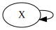
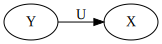

ICM with One Node¶
一个节点的信息因果模型 with a loop 是最简单的。We consider an Info Causal Model(ICM) with the causal graph \(G=(V, E)\) where \(V = \{X\}\) and \(E=\{[X, X]\}\). 我们本文的目的是希望用这个最简单的模型阐述清楚 ICM 的构建，训练，和推断(causal and statistical inference)。
[1]:
from graphviz import Source
Source('digraph{X->X}')
[1]:

作为一个简单的 feedback system, 表面上看很简单，但是如果我们允许 \(X\) 是一个复杂内部结构的张量，那么任何反馈系统都可以抽样成这种形式。因此我们需要研究在此简单模型上的因果推断。
[99]:
import os
from functools import partial
import torch
import numpy as np
import pandas as pd
import seaborn as sns
import matplotlib.pyplot as plt
import pyro
import pyro.distributions as dist
# for CI testing
smoke_test = ('CI' in os.environ)
assert pyro.__version__.startswith('1.3.0')
pyro.enable_validation(True)
pyro.set_rng_seed(1)
pyro.enable_validation(True)
# Set matplotlib settings
%matplotlib inline
plt.style.use('default')
[101]:
## Data
DATA_URL = "https://d2hg8soec8ck9v.cloudfront.net/datasets/rugged_data.csv"
data = pd.read_csv(DATA_URL, encoding="ISO-8859-1")
df = data[["cont_africa", "rugged", "rgdppc_2000"]]
df = df[np.isfinite(df.rgdppc_2000)]
df["rgdppc_2000"] = np.log(df["rgdppc_2000"])
[102]:
df.head()
[102]:
| cont_africa | rugged | rgdppc_2000 | |
|---|---|---|---|
| 2 | 1 | 0.858 | 7.492609 |
| 4 | 0 | 3.427 | 8.216929 |
| 7 | 0 | 0.769 | 9.933263 |
| 8 | 0 | 0.775 | 9.407032 |
| 9 | 0 | 2.688 | 7.792343 |
模型构建¶
在构建模型之前，我需要进一步熟悉Pyro，从头至尾用因果模型学习一遍。
Bayesian 模型¶
\[\begin{split}\text{weight} \sim N(\mu, 1) \\
\text{measurement}|\text{weight} \sim N(\text{weight}, 0.75)\end{split}\]
那么给定观测 \(\text{measurement} = 9.5\)
[1]:
import matplotlib.pyplot as plt
import numpy as np
import torch
import pyro
import pyro.infer
import pyro.optim
import pyro.distributions as dist
pyro.set_rng_seed(101)
mu = 8.5
def scale(mu):
weight = pyro.sample("weight", dist.Normal(mu, 1.0))
return pyro.sample("measurement", dist.Normal(weight, 0.75))
conditioned_scale = pyro.condition(scale, data={"measurement": 9.5})
def scale_parametrized_guide(mu):
a, b = pyro.param("a", torch.tensor(mu)), pyro.param("b", torch.tensor(1.))
return pyro.sample("weight", dist.Normal(a, torch.abs(b)))
pyro.clear_param_store()
svi = pyro.infer.SVI(model=conditioned_scale,
guide=scale_parametrized_guide,
optim=pyro.optim.SGD({"lr": 0.001, "momentum":0.1}),
loss=pyro.infer.Trace_ELBO())
losses, a,b = [], [], []
num_steps = 2500
for t in range(num_steps):
losses.append(svi.step(mu))
a.append(pyro.param("a").item())
b.append(pyro.param("b").item())
plt.plot(losses)
plt.title("ELBO")
plt.xlabel("step")
plt.ylabel("loss");
print('a = ',pyro.param("a").item())
print('b = ', pyro.param("b").item())
a = 9.107474327087402
b = 0.6285384893417358
几何分布¶
[2]:
p = pyro.sample('p', pyro.distributions.Uniform(0, 1))
def geometric(p, t=0):
# 该函数表示第 t 次失败之后, 继续尝试直到成功，返回总共失败次数。
x = pyro.sample("x_{}".format(t), pyro.distributions.Bernoulli(p))
if x.item() == 1:
return t
else:
t_update = t+1
return 1 + geometric(p, t_update)
print(geometric(p))
10
[22]:
loc, scale = 0.0, 1.0
u = pyro.sample('U', pyro.distributions.Uniform(0, 1))
y = pyro.sample('Y', pyro.distributions.Normal(loc, scale))
u, y
[22]:
(tensor(0.8346), tensor(0.4489))
[404]:
loc, scale = 0.0, 4.0
obs = torch.tensor(1.0)
def model(loc, scale):
t = 0
theta = pyro.param("theta", torch.tensor(2.0))
while t < 100000:
t = t + 1
u = pyro.sample('u_{}'.format(t), pyro.distributions.Uniform(0, 1))
y = pyro.sample('y_{}'.format(t), pyro.distributions.Normal(loc, scale))
if y**2 < u**2 / theta:
# 此时需要条件化 y_t with obs
break
return t, y
x = model(loc, scale)
x
[404]:
(5, tensor(-0.2728))
[405]:
[item for item in pyro.get_param_store()]
[405]:
['alpha_q', 'beta_q', 'theta']
掷硬币案例¶
[401]:
import os, torch, pyro, sys
import torch.distributions.constraints as constraints
import pyro.distributions as dist
import pyro.optim as optim
from pyro.infer import SVI, TraceGraph_ELBO
from pyro.distributions.testing.fakes import NonreparameterizedBeta
assert pyro.__version__.startswith('1.3.0')
pyro.enable_validation(True)
class BernoulliBetaExample:
def __init__(self, max_steps):
self.max_steps = max_steps
self.alpha0 = 10.0
self.beta0 = 10.0
self.data = torch.zeros(10)
self.data[0:6] = torch.ones(6)
self.n_data = self.data.size(0)
self.alpha_n = self.data.sum() + self.alpha0
self.beta_n = - self.data.sum() + torch.tensor(self.beta0 + self.n_data)
self.alpha_q_0 = 15.0
self.beta_q_0 = 15.0
def model(self, use_decaying_avg_baseline):
f = pyro.sample("latent_fairness", dist.Beta(self.alpha0, self.beta0))
with pyro.plate("data_plate"):
pyro.sample("obs", dist.Bernoulli(f), obs=self.data)
def guide(self, use_decaying_avg_baseline):
alpha_q = pyro.param("alpha_q", torch.tensor(self.alpha_q_0), constraint=constraints.positive)
beta_q = pyro.param("beta_q", torch.tensor(self.beta_q_0), constraint=constraints.positive)
baseline_dict = {'use_decaying_avg_baseline': use_decaying_avg_baseline, 'baseline_beta': 0.90}
pyro.sample("latent_fairness", NonreparameterizedBeta(alpha_q, beta_q), infer=dict(baseline=baseline_dict))
def do_inference(self, use_decaying_avg_baseline, tolerance=0.80):
pyro.clear_param_store()
optimizer = optim.Adam({"lr": .0005, "betas": (0.93, 0.999)})
svi = SVI(self.model, self.guide, optimizer, loss=TraceGraph_ELBO())
print("Doing inference with use_decaying_avg_baseline=%s" % use_decaying_avg_baseline)
param_abs_error = lambda name, target: torch.sum(torch.abs(target - pyro.param(name))).item()
for k in range(self.max_steps):
svi.step(use_decaying_avg_baseline)
if k % 100 == 0:
print('.', end='')
sys.stdout.flush()
alpha_error = param_abs_error("alpha_q", self.alpha_n)
beta_error = param_abs_error("beta_q", self.beta_n)
if alpha_error < tolerance and beta_error < tolerance:
break
print("\nDid %d steps of inference." % k)
print(("Final absolute errors for the two variational parameters " +
"were %.4f & %.4f") % (alpha_error, beta_error))
bbe = BernoulliBetaExample(max_steps=1000)
bbe.do_inference(use_decaying_avg_baseline=True)
bbe.do_inference(use_decaying_avg_baseline=False)
Doing inference with use_decaying_avg_baseline=True
..
Did 128 steps of inference.
Final absolute errors for the two variational parameters were 0.7989 & 0.7426
Doing inference with use_decaying_avg_baseline=False
........
Did 732 steps of inference.
Final absolute errors for the two variational parameters were 0.7674 & 0.7989
拒绝抽样模型¶
需要采样 \(p(x) = c \cdot g(x) \cdot h(x), Y \sim h(x), U\sim U(0, 1)\).
按照 Structural Causal Model(SCM) 结构因果方程的思维 , \(U\) 的取值会影响 \(X\) 的取值，然后这不是事实，\(X\) 的具体取值的大小完全取决于 \(Y\)，但是其分布却与 \(U\) 的分布有关，相当某种选择偏差导致的分布变化。 所以我们理解结构因果方程时候， 更新方程是 \(X \leftarrow Y, Y \sim h(x)\)，而 \(U\) 控制是否更新。
[20]:
from graphviz import Source
Source('digraph{rankdir=LR; Y -> X[label="U"]}')
# 
[20]:

具体的采样原理见：
具体算法如下：
[396]:
loc, scale = 10.0, 4.0
obs = torch.tensor(1.0)
def model(loc, scale):
t = 0
theta = 100
while t < 10000:
t = t + 1
u = pyro.sample('u_{}'.format(t), pyro.distributions.Uniform(0, 1))
y = pyro.sample('y_{}'.format(t), pyro.distributions.Normal(loc, scale))
if y**2 < u**2 / theta:
# 此时需要条件化 y_t with obs
break
if t >= 10000:
print("Hit the max iteration!")
return t, y
x = model(loc, scale)
x
[396]:
(6984, tensor(-0.0415))
[304]:
import os, torch, pyro, sys
import torch.distributions.constraints as constraints
import pyro.distributions as dist
import pyro.optim as optim
from pyro.infer import SVI, TraceGraph_ELBO
from pyro.distributions.testing.fakes import NonreparameterizedBeta
pyro.enable_validation(True)
[5]:
class RejectSampling(object):
def __init__(self, max_steps):
self.max_steps = max_steps
def model(self, use_decaying_avg_baseline):
f = pyro.sample("control", dist.Uniform(0, 1))
with pyro.plate("data_plate"):
pyro.sample("obs", dist.Bernoulli(f), obs=self.data)
def guide(self, use_decaying_avg_baseline):
alpha_q = pyro.param("alpha_q", torch.tensor(self.alpha_q_0), constraint=constraints.positive)
beta_q = pyro.param("beta_q", torch.tensor(self.beta_q_0), constraint=constraints.positive)
baseline_dict = {'use_decaying_avg_baseline': use_decaying_avg_baseline, 'baseline_beta': 0.90}
pyro.sample("latent_fairness", NonreparameterizedBeta(alpha_q, beta_q), infer=dict(baseline=baseline_dict))
def do_inference(self, use_decaying_avg_baseline, tolerance=0.80):
pyro.clear_param_store()
optimizer = optim.Adam({"lr": .0005, "betas": (0.93, 0.999)})
svi = SVI(self.model, self.guide, optimizer, loss=TraceGraph_ELBO())
print("Doing inference with use_decaying_avg_baseline=%s" % use_decaying_avg_baseline)
param_abs_error = lambda name, target: torch.sum(torch.abs(target - pyro.param(name))).item()
for k in range(self.max_steps):
svi.step(use_decaying_avg_baseline)
if k % 100 == 0:
print('.', end='')
sys.stdout.flush()
alpha_error = param_abs_error("alpha_q", self.alpha_n)
beta_error = param_abs_error("beta_q", self.beta_n)
if alpha_error < tolerance and beta_error < tolerance:
break
print("\nDid %d steps of inference." % k)
print(("Final absolute errors for the two variational parameters " +
"were %.4f & %.4f") % (alpha_error, beta_error))
g = BernoulliBetaExample(max_steps=1000)
g.model()
Doing inference with use_decaying_avg_baseline=True
..
Did 186 steps of inference.
Final absolute errors for the two variational parameters were 0.7994 & 0.7861
Doing inference with use_decaying_avg_baseline=False
.....
Did 448 steps of inference.
Final absolute errors for the two variational parameters were 0.7969 & 0.7989
Mini-Pyro¶
Mini-pyro 例子¶
[410]:
import argparse
import torch
from pyro.generic import distributions as dist
# We use the pyro.generic interface to support dynamic choice of backend.
from pyro.generic import infer, ops, optim, pyro, pyro_backend
def main(args):
# Define a basic model with a single Normal latent random variable `loc`
# and a batch of Normally distributed observations.
def model(data):
loc = pyro.sample("loc", dist.Normal(0., 1.))
with pyro.plate("data", len(data), dim=-1):
pyro.sample("obs", dist.Normal(loc, 1.), obs=data)
# Define a guide (i.e. variational distribution) with a Normal
# distribution over the latent random variable `loc`.
def guide(data):
guide_loc = pyro.param("guide_loc", torch.tensor(0.))
guide_scale = ops.exp(pyro.param("guide_scale_log", torch.tensor(0.)))
pyro.sample("loc", dist.Normal(guide_loc, guide_scale))
# Generate some data.
torch.manual_seed(0)
data = torch.randn(100) + 3.0
# Because the API in minipyro matches that of Pyro proper,
# training code works with generic Pyro implementations.
with pyro_backend(args.backend):
# Construct an SVI object so we can do variational inference on our
# model/guide pair.
Elbo = infer.JitTrace_ELBO if args.jit else infer.Trace_ELBO
elbo = Elbo()
adam = optim.Adam({"lr": args.learning_rate})
svi = infer.SVI(model, guide, adam, elbo)
# Basic training loop
pyro.get_param_store().clear()
for step in range(args.num_steps):
loss = svi.step(data)
if step % 100 == 0:
print("step {} loss = {}".format(step, loss))
# Report the final values of the variational parameters
# in the guide after training.
for name in pyro.get_param_store():
value = pyro.param(name)
print("{} = {}".format(name, value.detach().cpu().numpy()))
# For this simple (conjugate) model we know the exact posterior. In
# particular we know that the variational distribution should be
# centered near 3.0. So let's check this explicitly.
assert (pyro.param("guide_loc") - 3.0).abs() < 0.1
计算对数似然¶
[422]:
import pyro.poutine as poutine
import pyro.distributions as dist
def make_log_joint(model):
def _log_joint(cond_data, *args, **kwargs):
conditioned_model = poutine.condition(model, data=cond_data)
trace = poutine.trace(conditioned_model).get_trace(*args, **kwargs)
return trace.log_prob_sum()
return _log_joint
from pyro.poutine.trace_messenger import TraceMessenger
from pyro.poutine.condition_messenger import ConditionMessenger
def make_log_joint_2(model):
def _log_joint(cond_data, *args, **kwargs):
with TraceMessenger() as tracer:
with ConditionMessenger(data=cond_data):
model(*args, **kwargs)
trace = tracer.trace
logp = 0.
for name, node in trace.nodes.items():
if node["type"] == "sample":
if node["is_observed"]:
assert node["value"] is cond_data[name]
logp = logp + node["fn"].log_prob(node["value"]).sum()
return logp
return _log_joint
[423]:
def weather():
cloudy = pyro.sample('cloudy', pyro.distributions.Bernoulli(0.3))
cloudy = 'cloudy' if cloudy.item() == 1.0 else 'sunny'
mean_temp = {'cloudy': 55.0, 'sunny': 75.0}[cloudy]
scale_temp = {'cloudy': 10.0, 'sunny': 15.0}[cloudy]
temp = pyro.sample('temp', pyro.distributions.Normal(mean_temp, scale_temp))
return cloudy, temp.item()
weight_log_joint = make_log_joint(weather)
print(weight_log_joint({"temp": torch.tensor(51)}))
tensor(-5.2637)
[424]:
def model():
loc, scale = 0.0, 4.0
t = 0
theta = pyro.param("theta", torch.tensor(2.0))
while t < 100000:
t = t + 1
u = pyro.sample('u_{}'.format(t), pyro.distributions.Uniform(0, 1))
y = pyro.sample('y_{}'.format(t), pyro.distributions.Normal(loc, scale))
if y**2 < u**2 / theta:
# 此时需要条件化 y_t with obs
break
return t, y
def make_log_joint(model):
t, y = model()
name = "y_{}".format(t)
print(t, y)
def _log_joint(cond_data, *args, **kwargs):
print(cond_data)
cond_data = {name:v for k, v in cond_data.items()}
print(cond_data)
conditioned_model = poutine.condition(model, data=cond_data)
trace = poutine.trace(conditioned_model).get_trace(*args, **kwargs)
return trace.log_prob_sum()
return _log_joint
model_log_joint = make_log_joint(model)
print(model_log_joint({"temp": torch.tensor(51.5)}))
8 tensor(0.0642)
{'temp': tensor(51.5000)}
{'y_8': tensor(51.5000)}
tensor(-261.4502)
原始代码：
[426]:
def scale(mu):
weight = pyro.sample("weight", dist.Normal(mu, 1.0))
out = pyro.sample("measurement", dist.Normal(weight, 0.75))
return out
def weather():
cloudy = pyro.sample('cloudy', pyro.distributions.Bernoulli(0.3))
cloudy = 'cloudy' if cloudy.item() == 1.0 else 'sunny'
mean_temp = {'cloudy': 55.0, 'sunny': 75.0}[cloudy]
scale_temp = {'cloudy': 10.0, 'sunny': 15.0}[cloudy]
temp = pyro.sample('temp', pyro.distributions.Normal(mean_temp, scale_temp))
return cloudy, temp.item()
for _ in range(3):
print(weather())
weight_log_joint = make_log_joint(weather)
print(weight_log_joint({"temp": torch.tensor(51)}))
import pyro.poutine as poutine
import pyro.distributions as dist
def make_log_joint(model):
def _log_joint(cond_data, *args, **kwargs):
conditioned_model = poutine.condition(model, data=cond_data)
trace = poutine.trace(conditioned_model).get_trace(*args, **kwargs)
return trace.log_prob_sum()
return _log_joint
scale_log_joint = make_log_joint(scale)
print(scale_log_joint({"measurement": 9.5, "weight": 8.23}, 8.5))
def model():
loc, scale = 0.0, 4.0
t = 0
theta = pyro.param("theta", torch.tensor(2.0))
while t < 100000:
t = t + 1
u = pyro.sample('u_{}'.format(t), pyro.distributions.Uniform(0, 1))
y = pyro.sample('y_{}'.format(t), pyro.distributions.Normal(loc, scale))
if y**2 < u**2 / theta:
# 此时需要条件化 y_t with obs
break
return t, y
def make_log_joint(model):
t, y = model()
name = "y_{}".format(t)
print(t, y)
def _log_joint(cond_data, *args, **kwargs):
print(cond_data)
cond_data = {name:v for k, v in cond_data.items()}
print(cond_data)
conditioned_model = poutine.condition(model, data=cond_data)
trace = poutine.trace(conditioned_model).get_trace(*args, **kwargs)
return trace.log_prob_sum()
return _log_joint
model_log_joint = make_log_joint(model)
print(model_log_joint({"temp": torch.tensor(51.5)}))
from pyro.poutine.trace_messenger import TraceMessenger
from pyro.poutine.condition_messenger import ConditionMessenger
def make_log_joint_2(model):
def _log_joint(cond_data, *args, **kwargs):
with TraceMessenger() as tracer:
with ConditionMessenger(data=cond_data):
model(*args, **kwargs)
trace = tracer.trace
logp = 0.
for name, node in trace.nodes.items():
if node["type"] == "sample":
if node["is_observed"]:
assert node["value"] is cond_data[name]
logp = logp + node["fn"].log_prob(node["value"]).sum()
return logp
return _log_joint
scale_log_joint = make_log_joint_2(scale)
print(scale_log_joint({"measurement": 9.5, "weight": 8.23}, 8.5))
('sunny', 100.9456787109375)
('sunny', 85.012451171875)
('sunny', 61.389869689941406)
sunny 83.8826904296875
{'temp': tensor(51)}
{'y_sunny': tensor(51)}
tensor(-4.2058)
-------------------------------------------
ValueErrorTraceback (most recent call last)
~/opt/anaconda3/lib/python3.7/site-packages/pyro/poutine/trace_struct.py in log_prob_sum(self, site_filter)
190 try:
--> 191 log_p = site["fn"].log_prob(site["value"], *site["args"], **site["kwargs"])
192 except ValueError:
~/opt/anaconda3/lib/python3.7/site-packages/torch/distributions/normal.py in log_prob(self, value)
71 if self._validate_args:
---> 72 self._validate_sample(value)
73 # compute the variance
~/opt/anaconda3/lib/python3.7/site-packages/torch/distributions/distribution.py in _validate_sample(self, value)
237 if not isinstance(value, torch.Tensor):
--> 238 raise ValueError('The value argument to log_prob must be a Tensor')
239
ValueError: The value argument to log_prob must be a Tensor
During handling of the above exception, another exception occurred:
ValueErrorTraceback (most recent call last)
<ipython-input-426-8813abdf5019> in <module>
29
30 scale_log_joint = make_log_joint(scale)
---> 31 print(scale_log_joint({"measurement": 9.5, "weight": 8.23}, 8.5))
32
33 def model():
<ipython-input-426-8813abdf5019> in _log_joint(cond_data, *args, **kwargs)
25 conditioned_model = poutine.condition(model, data=cond_data)
26 trace = poutine.trace(conditioned_model).get_trace(*args, **kwargs)
---> 27 return trace.log_prob_sum()
28 return _log_joint
29
~/opt/anaconda3/lib/python3.7/site-packages/pyro/poutine/trace_struct.py in log_prob_sum(self, site_filter)
194 shapes = self.format_shapes(last_site=site["name"])
195 raise ValueError("Error while computing log_prob_sum at site '{}':\n{}\n"
--> 196 .format(name, exc_value, shapes)).with_traceback(traceback)
197 log_p = scale_and_mask(log_p, site["scale"], site["mask"]).sum()
198 site["log_prob_sum"] = log_p
~/opt/anaconda3/lib/python3.7/site-packages/pyro/poutine/trace_struct.py in log_prob_sum(self, site_filter)
189 else:
190 try:
--> 191 log_p = site["fn"].log_prob(site["value"], *site["args"], **site["kwargs"])
192 except ValueError:
193 _, exc_value, traceback = sys.exc_info()
~/opt/anaconda3/lib/python3.7/site-packages/torch/distributions/normal.py in log_prob(self, value)
70 def log_prob(self, value):
71 if self._validate_args:
---> 72 self._validate_sample(value)
73 # compute the variance
74 var = (self.scale ** 2)
~/opt/anaconda3/lib/python3.7/site-packages/torch/distributions/distribution.py in _validate_sample(self, value)
236 """
237 if not isinstance(value, torch.Tensor):
--> 238 raise ValueError('The value argument to log_prob must be a Tensor')
239
240 event_dim_start = len(value.size()) - len(self._event_shape)
ValueError: Error while computing log_prob_sum at site 'weight':
The value argument to log_prob must be a Tensor
[ ]: